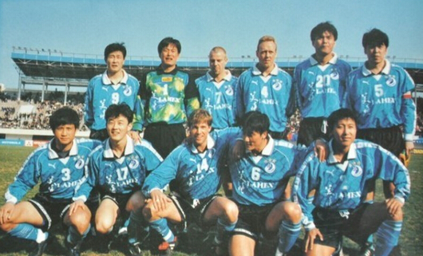

大连万达：时代成就的传奇
1992年，大连市成立足球俱乐部，一年后，国资的华录集团入股，1994年3月，王健林的万达集团入主，大连万达足球俱乐部成立。中国足坛当时的俱乐部，政府均介入其股权的出让和购买，一个集团公司投资足球，往往称为"入主"，大连足球也不例外。大连万达足球队开启了中国职业化的一个传奇时代，即大连万达时代。
大连万达时代的开启时间在1994——1998年间，大连万达在五个赛季里四夺联赛冠军。1994年，大连万达的竞争对手是广州太阳神，后者拥有纯技术流的中前场班底，以及彭伟国和胡志军两位传奇球员，1994年甲A联赛里，大连万达提前一轮夺冠，他们也是十二支联赛球队中唯一一支主场不败的球队，有趣的一点是，他们在第22轮客场击败四川，若战平，四川将成为那个赛季里第二支主场不败球队。万达在那一年中已展现了王者的风范，当年23岁的门将韩文海入选了国家队，队长中后卫徐弘还是国家队队长；另一名20岁的中后卫张恩华是国奥队长；职业化后中国最出色的中场选手李明才23岁，他在随后的八年间，一直是国家队中后腰和右前卫重要人选。如果仔细翻出大连万达当时的大名单，就会从里面找到18岁的孙继海和16岁的门将陈东；此外，大连万达还拥有大小王涛（后腰和高中锋），以及边锋魏意明。这还没有算上当年与孙继海同龄的吴俊，他也是一位左路好手。可以说，1994年大连万达的成功，完全得益于他们拥有一套好的球员班子和体系。很多大连人都认为，大连是出足球人才的地方，只要大连队能把人才留住，就能夺得冠军。即使今天，四连冠的恒大也拥有赵旭日、李学鹏、于汉超、冯潇霆和董学升五名连籍球员。这个理论确实成立，大连万达的第一个甲A冠军和随后开启的王朝，其基础就是拥有良好的足球人才宝库；大连足球在随后的五年间守住了这个宝库，因此成就了甲A时代的大连王朝。
但万达以及王健林的传奇不可复制。象今天，恒大的成功其实也有当年万达王朝的影子，但恒大付出的更多，包括买来优秀外援和请来世界顶级教练。在万达王朝开启时，数支球队都拥有万达的班底，但他们存在着内部矛盾；同时，万达当年的教练不能算是世界级的。因此可见，大连王朝的开启，更多的是依靠稳定和团结，这在当时的中国足坛，是少见的俱乐部氛围。
这就是时势造英雄，今天，恒大付出更多的金钱以及更专业和大规模的管理团队才能收获当年大连的成功，大连足球王朝的建立，得益于大连丰富的足球人才库，以及队内的稳定和团结，当大连实德接手后，万达时期的稳定和团结，渐渐消失了……